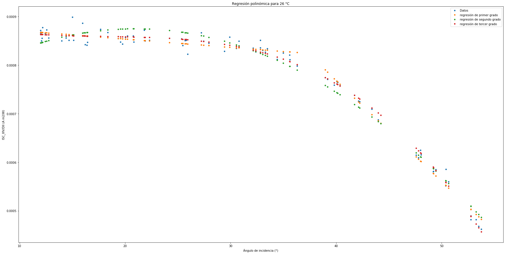

In [15]: runfile('C:/Users/juanj/OneDrive/Escritorio/repositorio_tfg/Calcular_iam.py', wdir='C:/Users/juanj/OneDrive/Escritorio/repositorio_tfg')
Reloaded modules: Error
No se puede realizar una division por cero
0
C:\Users\juanj\Anaconda3\lib\site-packages\pvlib\tools.py:85: RuntimeWarning:
invalid value encountered in arcsin
1
2
3
4
5
6
7
8
9
El coeficiente de determinación para la regresión de primer grado es: 0.9880637774150313
El coeficiente de determinación para la regresión de segundo grado es: 0.9773634387372402
El coeficiente de determinación para la regresión de tercer grado es: 0.9908992135296357
El coeficiente de determinación para la regresión de ashrae es: 0.8407595585711527
El coeficiente de determinación para la regresión de martin_ruiz es: 0.8129611369406903
El coeficiente de determinación para la regresión de physical es: 0.8374454975128174

In [16]: